Just thirty-five minutes’ drive from home, and yet we had never been to Monte San Savino. On Saturday we finally put that right. And our first discovery was right beneath the Giardini Pensili, the hanging gardens, where I took the Triride onto the walkway of the Cisternone, the great cistern. From there, among the arches reflected in the water, began our stroll through this village in the Valdichiana, in the province of Arezzo.
Back in the daylight, the Logge dei Mercanti, the churches of the centre and, for lunch, Aldo’s ciccia (Tuscan for meat) were waiting for us. Then we stopped to buy some porchetta, and there too the day had a surprise in store for us. In the afternoon, a stop at the Santuario delle Vertighe and a last tasting at SuprEvo, where the olive oil even made it to the table in the dessert.
From Porta Cieca to the Cisternone
We arrived in Monte San Savino in the morning and left the car in Viale XXIV Maggio. To go up into the town we chose Porta Cieca. Where a gate once opened in the walls, today you enter a restored building and can take the lift up to Piazza San Francesco.
Accessibility · Porta Cieca
To go up I had to unhook the Triride from my wheelchair, because the lift car is small.
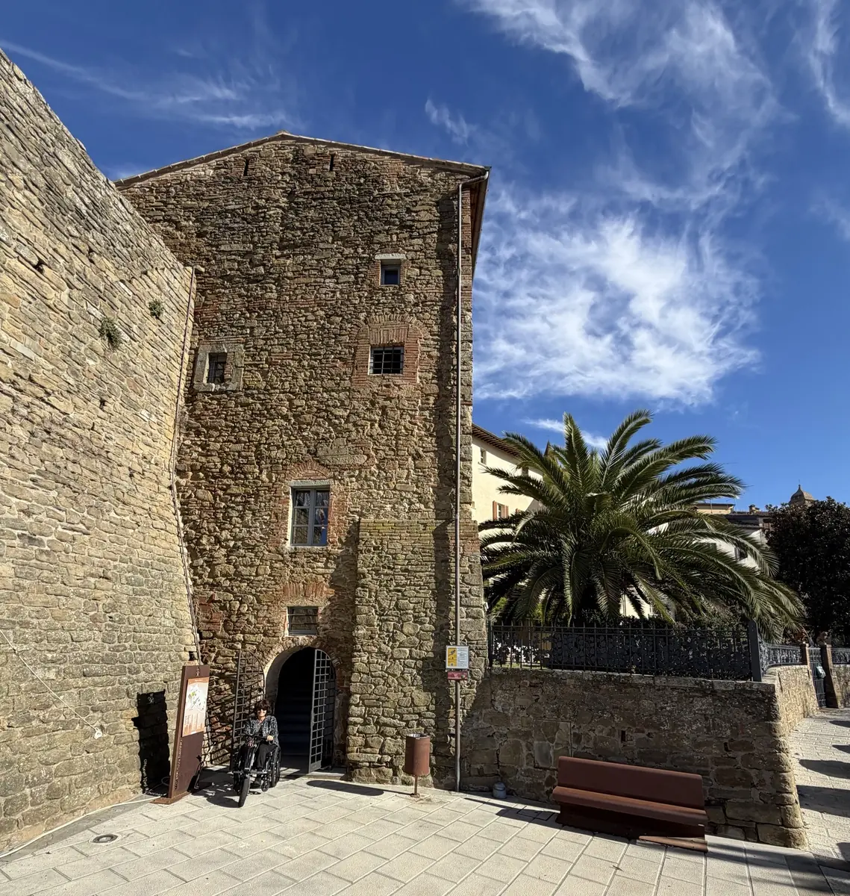
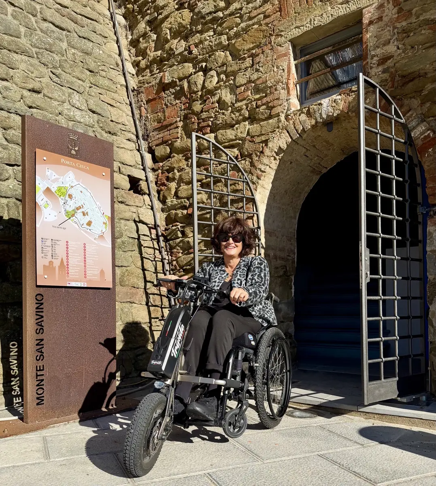

This is the square of the Cisternone, and it’s worth stopping here before moving on.

Accessibility · Cisternone
From the metal walkway I was able to see clearly how it is built.

Beneath the garden lie two long aisles of stone and brick, with barrel vaults and four large arches connecting them. Looking at it, it seems almost like an underground palace. In the sixteenth century Nanni di Baccio Bigio designed this space to collect rainwater for the townspeople. Today that water is still used to water the garden above.
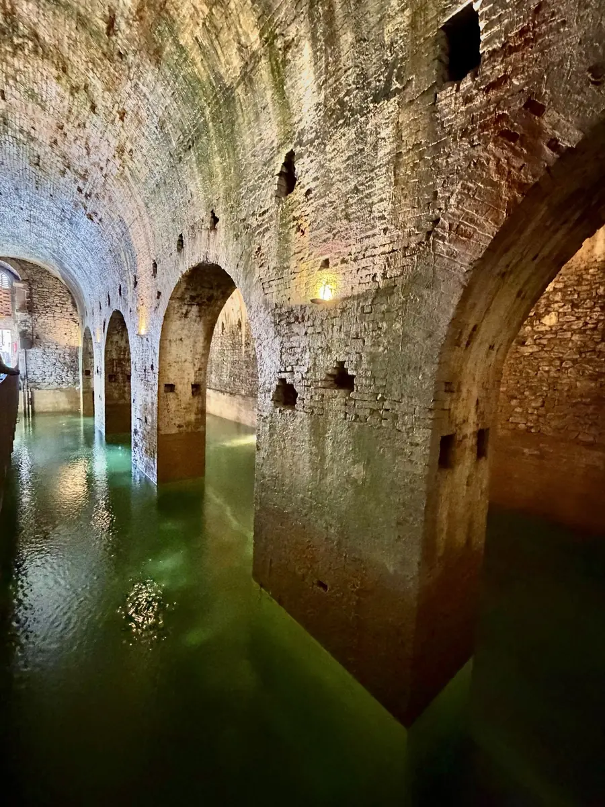
Accessibility · Old town
One stretch to watch out for is the climb from Piazza San Francesco towards the centre. The lift spared us the flight of steps, but once I was out in the square, I needed my companion’s help to tackle that stretch, even with the Triride attached. For the rest of the walk, with the Triride I didn’t need any more assistance. This experience, however, depends on the device used: whether you can manage slopes on your own has to be assessed according to the power of the motor and the features of the wheelchair’s propulsion system, as well as the gradient and the condition of the route.
Along Corso Sangallo, between the Logge and Palazzo di Monte
Once we reached Corso Sangallo, we found ourselves between two buildings facing each other across the street. On one side are the Logge dei Mercanti. The sixteenth-century portico, the work of the same architect as the Cisternone, is open on three sides. Under its arches the merchants used to meet and the town’s trading took place.
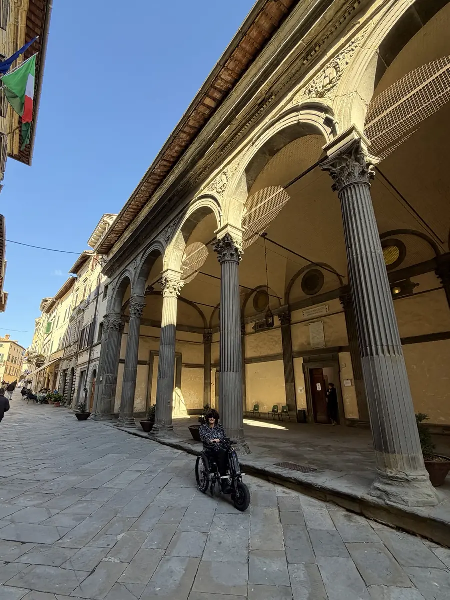
On the other side is the façade of Palazzo di Monte, in grey pietra serena sandstone, now the town hall.
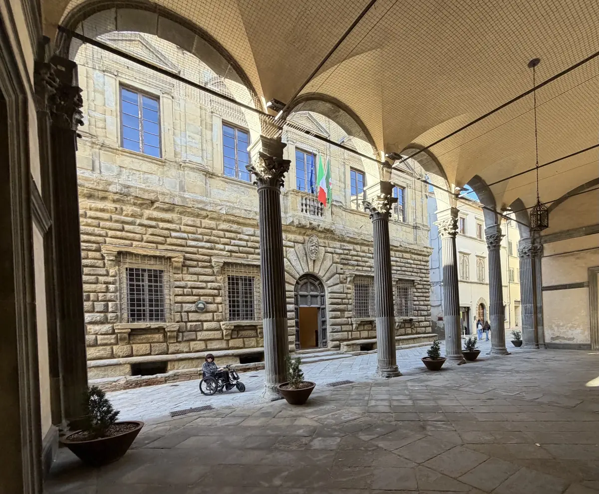
It was Cardinal Antonio Di Monte who wanted the palace built, in 1515. It was designed by Antonio da Sangallo the Elder, and Nanni di Baccio Bigio also worked on completing it.
Accessibility · Palazzo di Monte and the Giardini Pensili
For me, the visit stopped at the façade. There were several steps at the entrance and we couldn’t find another way in without steps. The Giardini Pensili too, right above the cistern we had just visited, we could only see from outside.
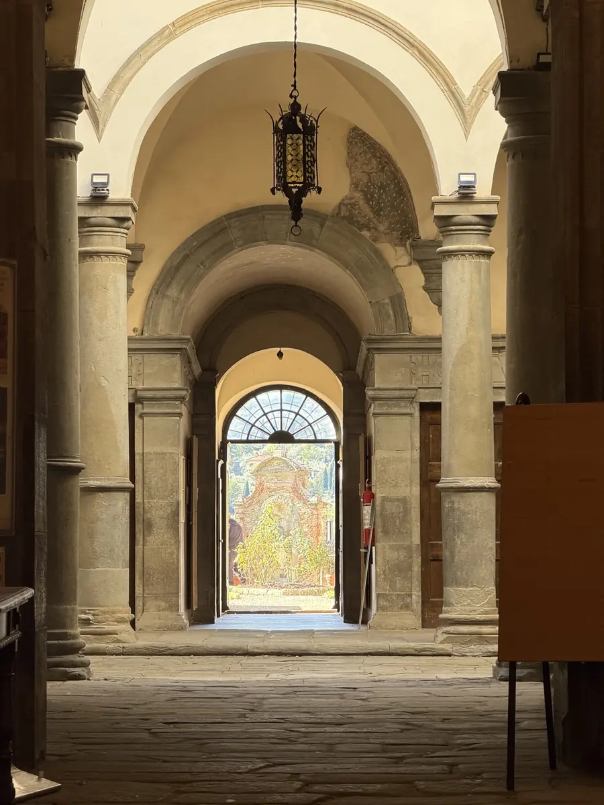
We carried on along the Corso, past Palazzo Pretorio and the Torre Civica, the medieval part of this walk.
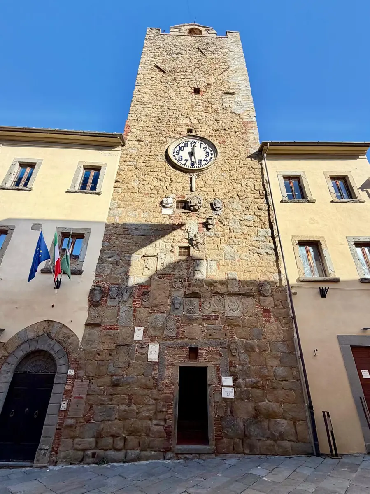
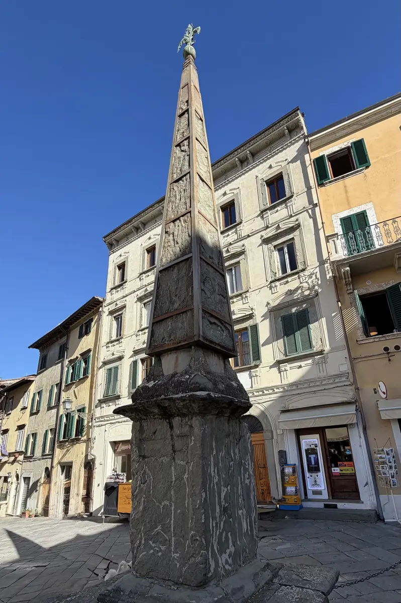
It was the people of Monte San Savino who had this pietra serena obelisk erected in 1644. With the Guglia they wanted to pay tribute to Mattias de’ Medici, brother of Grand Duke Ferdinando II, who had been granted Monte San Savino as a fief that very year.
The churches of Sant’Agostino and Santa Chiara
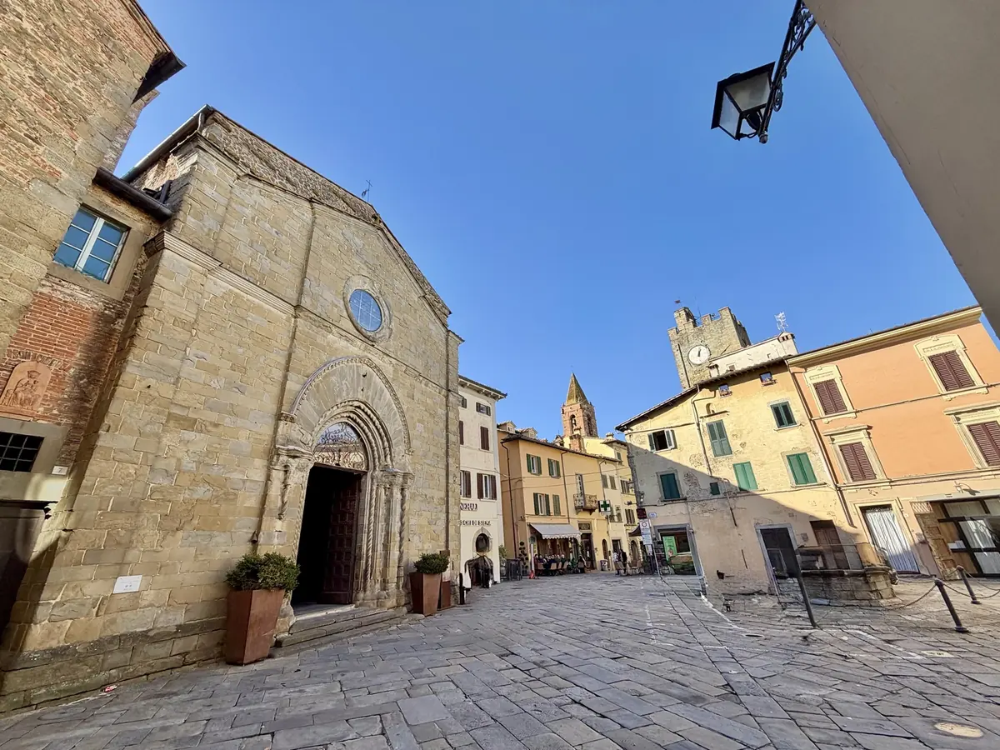
Accessibility · Sant’Agostino
At Sant’Agostino our way in was a little unusual. To reach the church in the wheelchair we had to go through the cloister, but the door had a lock we couldn’t open. The parish priest came to our rescue. From there I was able to go right into the church without unhooking the Triride.

Sant’Agostino keeps the Gothic portal from its fourteenth-century origins, while inside you find the Renaissance work linked to Andrea Sansovino and the stucco altars added in the eighteenth century. The painting we stopped for is on the high altar. It is the Assumption of the Virgin with Saints Augustine and Romuald, painted by Giorgio Vasari in 1539. The composition links earth and heaven: above, the Virgin is taken up into heavenly glory, while below the apostles are gathered around the tomb, together with Saints Augustine and Romuald. The contrast between the earthly scene and Mary’s ascent draws the eye towards the upper part of the painting.
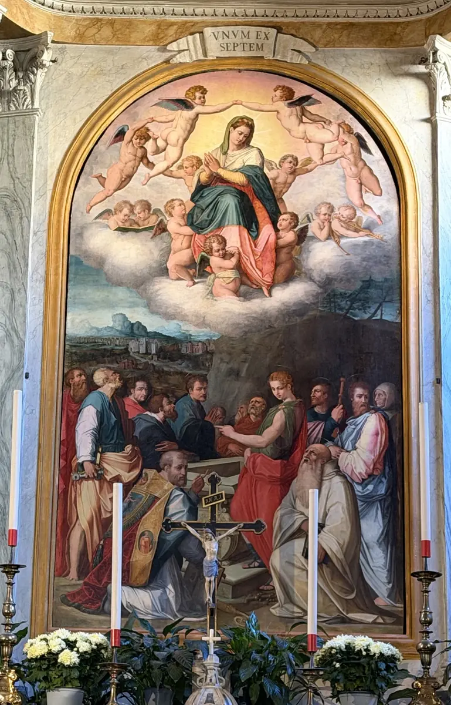
Accessibility · Santa Chiara
At Santa Chiara, in Piazza Gamurrini, the difficulty was a step at the threshold. With a helping hand to get over it, I managed to get in.
The seventeenth-century church was part of the convent of the Poor Clares and holds four terracottas that are older than the building. Two are in the Della Robbia tradition, Saint Anthony the Abbot and the Adoration of the Shepherds. The other two are altarpieces by Andrea Sansovino and depict Saint Lawrence between Saint Sebastian and Saint Roch and the Madonna and Child with Saints.
The Madonna and Child with Saints shows Mary at the top, with Jesus on her lap, surrounded by little angels. Below her are gathered Saints Agatha and Lucy and Saints Benedict and Romuald, while two angels hold a crown above her head. The white figures stand out against the blue background, framed by a border of colourful leaves and fruit.
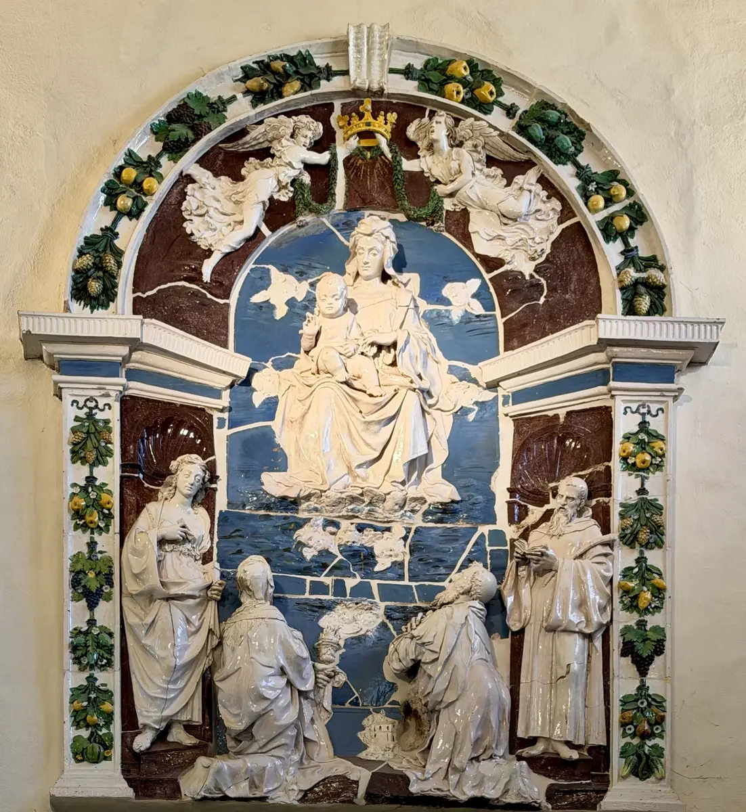
In the Adoration of the Shepherds the scene is livelier and full of colour: Mary and Joseph bend towards the Child, lying in the manger, with the shepherds beside them. Above, the angels hold the scroll with the Gloria in excelsis Deo, while in the background an angel announces the birth to other shepherds.
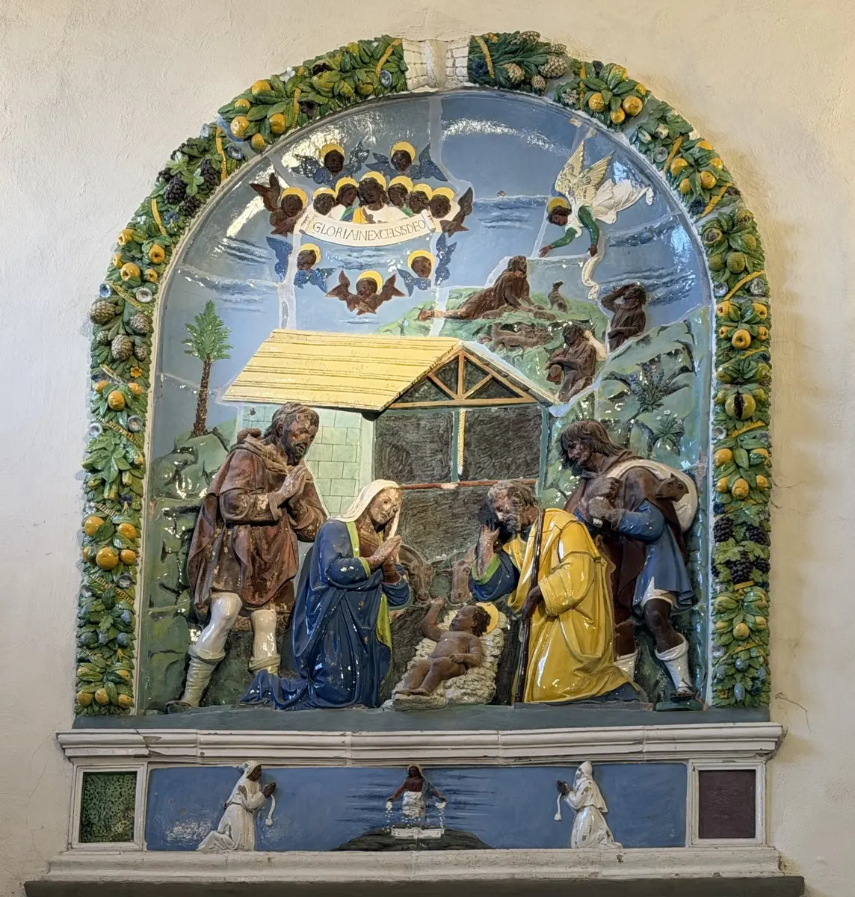
Saint Anthony the Abbot is shown seated, with his long beard, his staff and a book. At his feet is the little pig, his traditional attribute. The warm colour of the figure contrasts with the glazed frame, decorated with fruit, flowers and leaves.

In the altarpiece of Saint Lawrence between Saint Sebastian and Saint Roch, on the other hand, the natural tones of the terracotta prevail. In the centre, Lawrence can be recognised by the gridiron of his martyrdom; at the sides are Sebastian and Roch, the latter dressed as a pilgrim. The three figures stand in shell-shaped niches, topped by two angels with a crown; small narrative reliefs complete the base.
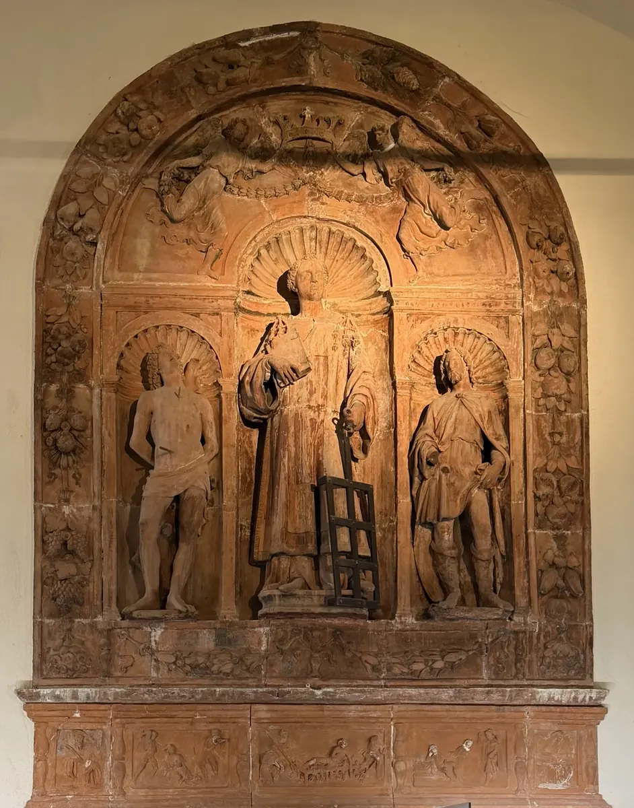
Lunch at Qui Ciccia, then a surprise meeting
For lunch we stopped at Qui Ciccia, Aldo Iacomoni’s restaurant. His cooking is Tuscan, with grilled meat taking centre stage.
We really loved Aldo’s ciccia. Quality meat, tender, full of flavour and well cooked. Each of us chose how we liked it done. For us, the highlight of the lunch.

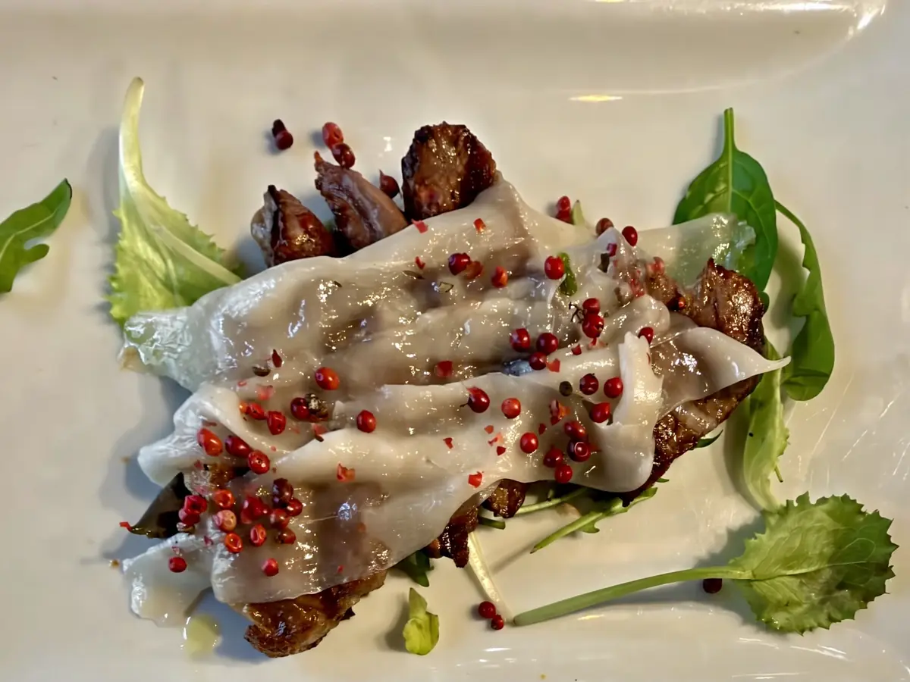
We also knew his other business, Le Delizie di Aldo, but for sitting down at a table this was the more convenient choice.
Accessibility · Qui Ciccia
The restaurant is on two floors. If you use a wheelchair, mention it when you book and ask for a table in the accessible dining room. I reached my place in my wheelchair without any difficulty. There is, however, an important detail for anyone planning the day: the restaurant’s toilet is on the second floor and is not wheelchair accessible.
After lunch we went over to Le Delizie di Aldo, in Piazza Francesco Gamurrini, to buy porchetta.

And who did we find? Aldo himself! We stopped for a chat and to take a photo together.
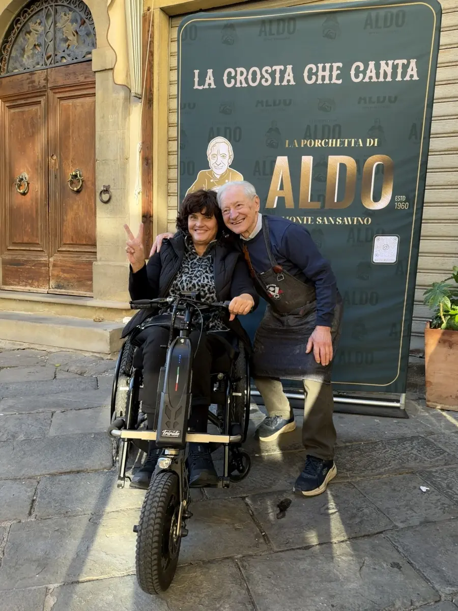
In 1960, just back from military service, he had taken over the business of the town’s porchetta maker. He was nineteen. Since then he has kept working with his wife Giorgina and the family.
Garlic, wild fennel and about eight hours in the wood-fired oven: that’s how his porchetta is made.
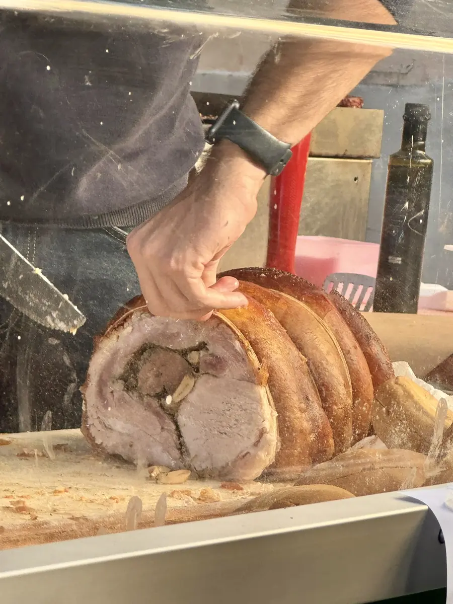
In 2010 he made one a full 44.93 metres long, which went into the Guinness World Records. In 2016 he was recognised as a Maestro d’Arte e Mestiere, a master of his craft. We will remember him above all like this: a man from another time, warm and down-to-earth, happy to stop and talk with people who had simply come by to buy a bit of porchetta. In his manner there is the simplicity of someone who has devoted a lifetime to his trade and still enjoys meeting people and exchanging a few words. A brief encounter, but one of those that leave a lovely memory and add the warmth of a sincere welcome to the visit.
In the afternoon at the Santuario di Santa Maria delle Vertighe
At around 3.30 pm we reached the sanctuary, a few kilometres from the village.
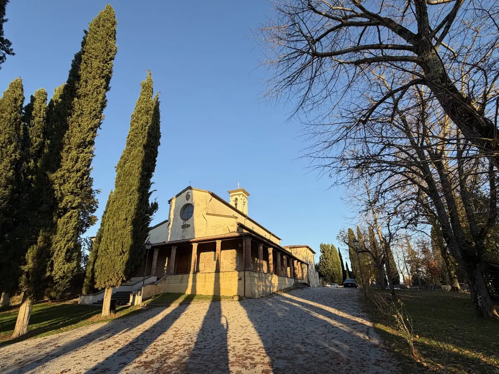
Accessibility · Santuario delle Vertighe
After the morning’s climbs, here I got around easily. From the reserved parking space we reached the entrance ramp, and I was able to go round both the outdoor areas and the inside of the church in my wheelchair.
A church already stood at the Vertighe in 1073. The three-aisled building we visited dates from 1503 and still encloses the ancient chapel. A legend tells that, after a quarrel between two brothers over a piece of land, the chapel was miraculously carried from Asciano all the way up to this hill.
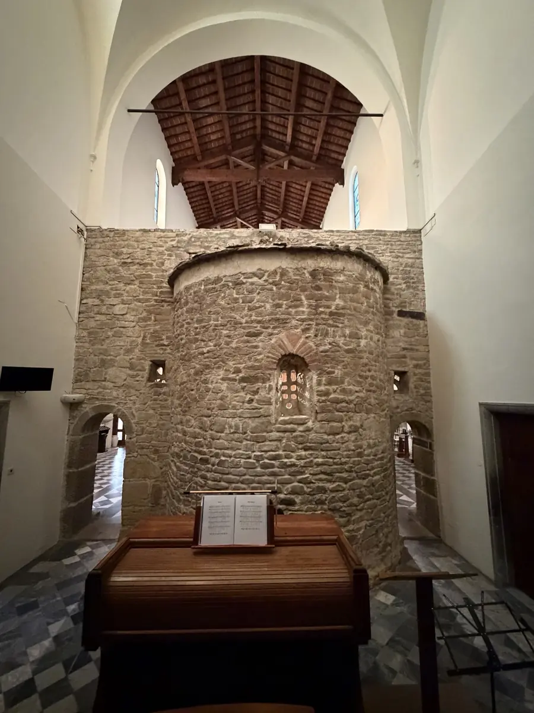
Two images tell of devotion to the Madonna in different eras.

The harder one to make out is on the vault of the chapel, where three layers of paintings overlap and part of an Assumption can still be seen.
On the high altar, instead, you can see the thirteenth-century panel painting by Margarito and Ristoro d’Arezzo. In the centre Mary sits enthroned with the Child. At the sides, in four scenes, come the Annunciation, the Nativity, the Adoration of the Magi and the Assumption.
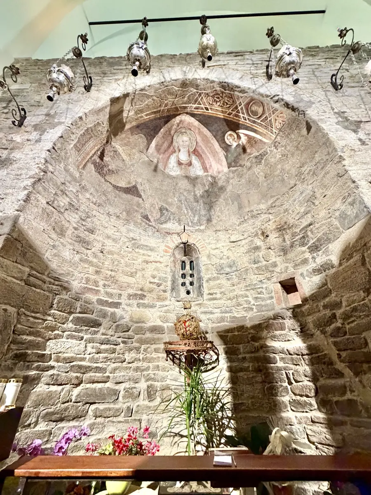

A curious fact about the sanctuary. In 1964 Pope Paul VI proclaimed the Madonna delle Vertighe patroness of the Autostrada del Sole, the A1 motorway.
At SuprEvo, a guided tasting among the aromas and flavours of extra virgin olive oil
For our last stop we went to Via XXV Aprile 119, to SuprEvo – Museo dell’Olio Morettini. Here you’ll find a museum, an olive mill and a shop. The museum route has ten stages, from the tools of the past to sensory experiences. For this trip we chose the guided tasting, which must be booked, lasts an hour and costs €10 per person. The ticket for the interactive museum costs €10.
First came the explanation of how to taste extra virgin olive oil. We started with the aroma, then moved on to the taste, paying attention to the bitterness and the pungency too. With several oils to compare, it became clearer what to look for in the next tasting.
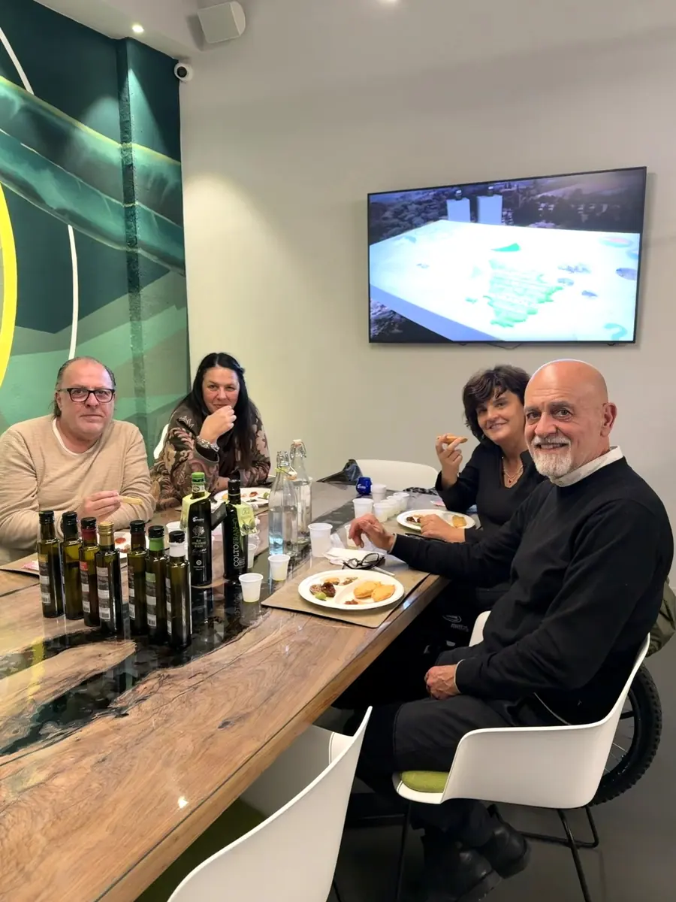
We then tasted the oils on granetti, followed by savoury and sweet specialities made with the house oils. The most intriguing tasting for us was the sweet one, precisely because shortly before we had enjoyed the same ingredient on the granetti.

Before leaving we had a look round the shop, where you can find the oils and specialities from the tasting.
Accessibility · SuprEvo
Entry to the museum is free for people with disabilities. Here I also used the accessible toilet.
We liked the oils for their quality, and the tasting was a wonderful experience. We will certainly come back to visit the interactive museum.
My “no surprises” summary
The things to remember, gathered here so they are easy to find.
| Item | Rating |
|---|---|
| Porta Cieca lift | 4 out of 5 |
| Route through the old town | 3 out of 5 |
| Sant’Agostino and Santa Chiara | 3 out of 5 |
| Qui Ciccia · accessible dining room, toilet on the second floor | 3 out of 5 |
| Santuario delle Vertighe | 5 out of 5 |
| SuprEvo · tasting and toilet | 5 out of 5 |
| Tuscan cooking at Qui Ciccia | 5 out of 5 |
| Porchetta at Le Delizie di Aldo | 5 out of 5 |
| Oils and specialities at SuprEvo | 5 out of 5 |
Things to remember
- To go up into the town we used the Porta Cieca lift from Viale XXIV Maggio. To get into the small lift car I had to unhook the Triride. From the exit in Piazza San Francesco towards the centre, the climb required my companion’s help even with the Triride. For the rest of the walk, with the Triride I carried on without any further assistance. How independently you can manage the slopes should still be assessed according to the power of the motor and the features of the device used, as well as the condition of the route.
- On our visits we went into the Cisternone in the wheelchair. At Sant’Agostino we needed help to open the cloister, at Santa Chiara to get over the step. Palazzo di Monte and the Giardini Pensili we only saw from outside.
- For lunch we preferred the accessible dining room at Qui Ciccia to the Le Delizie di Aldo shop. When you book, mention the wheelchair and ask for a table in the accessible dining room. The toilet is on the second floor and is not wheelchair accessible.
- At the Vertighe we found reserved parking and a ramp. At SuprEvo the tasting must be booked. It lasts an hour and costs €10 per person. Here we also found the accessible toilet.
Toilets we found
- SuprEvo Accessible toilet, which I used myself.
- Qui Ciccia The toilet is on the second floor and is not wheelchair accessible.
Overall experience
5 hearts out of 5This story describes our experience in a wheelchair on Saturday 14 November 2026. Services, access and parking conditions can change: when planning your visit, check the latest information for each place.